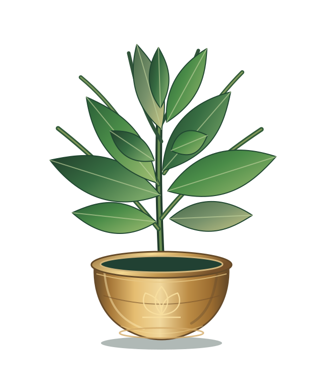
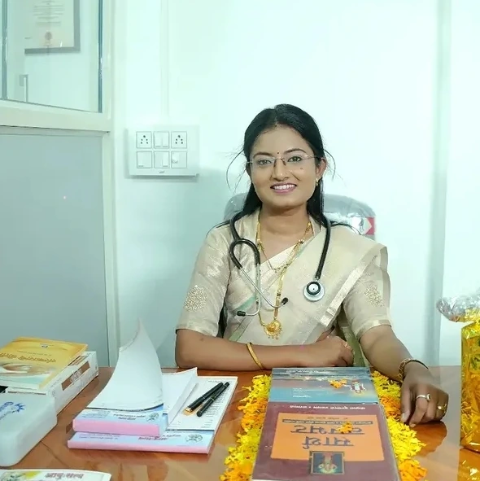
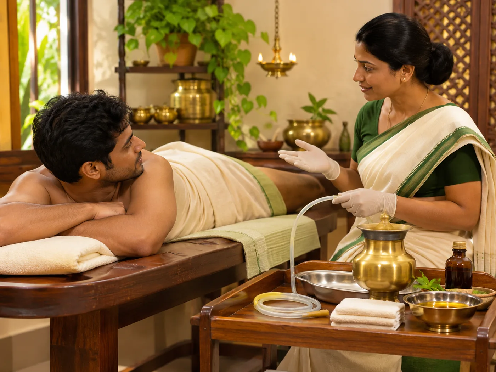
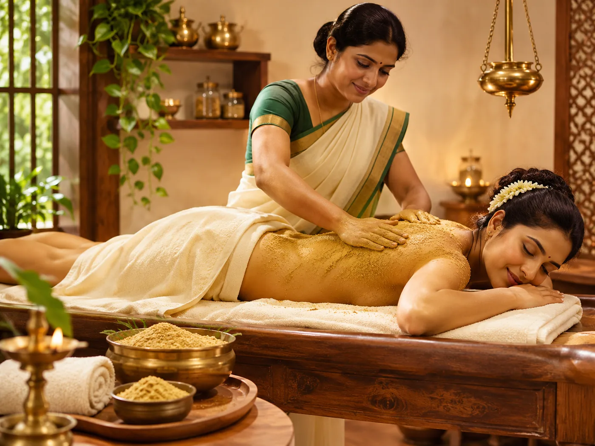
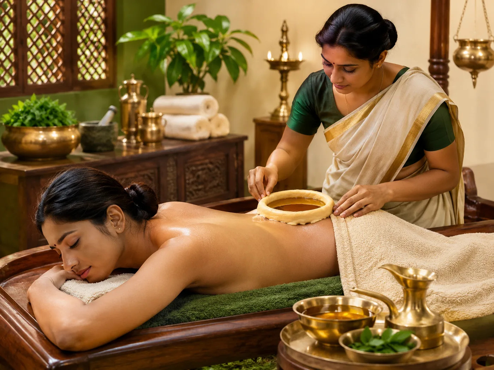
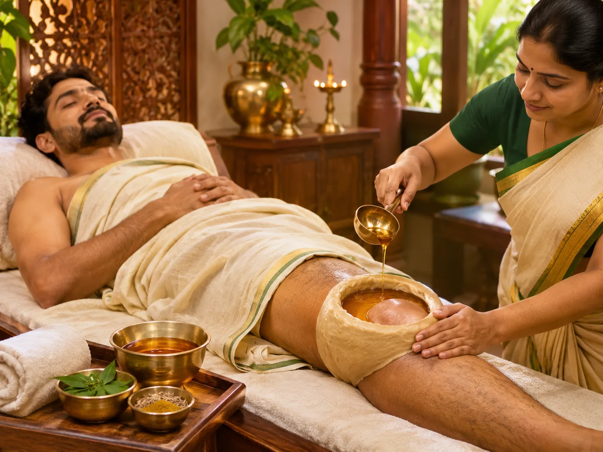
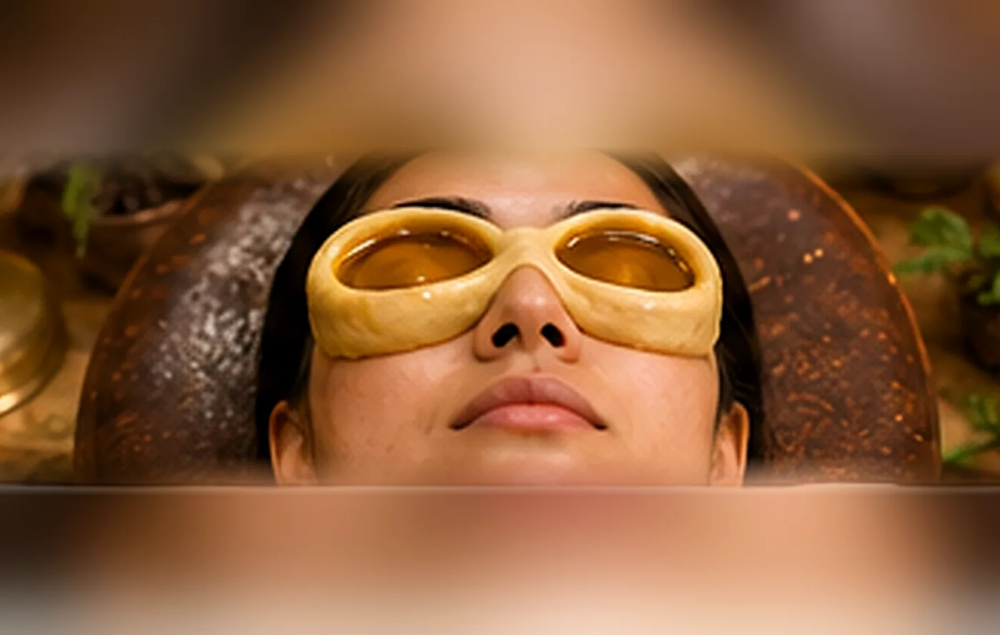
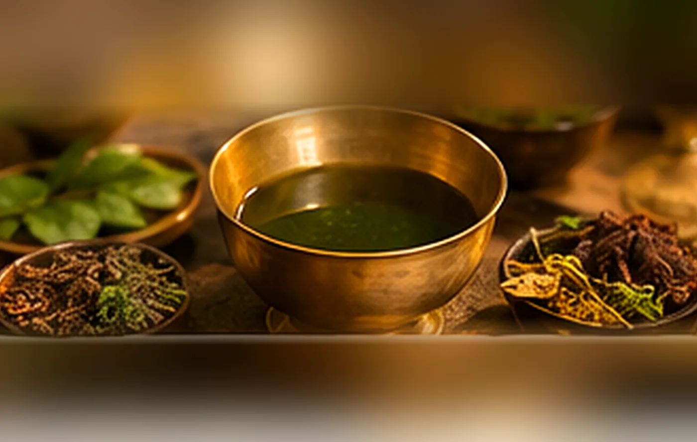

Ayurvedic Consultation
Time to understand individual concerns, routines, health history, and classical Ayurvedic assessment considerations.
Contact clinicA SPACE FOR THOUGHTFUL HEALING
आयुःसत्त्व आयुर्वेद व पंचकर्म चिकित्सालय
Rooted in the classical science of Ayurveda, Ayusatva welcomes you to a more personal, considered approach to everyday wellbeing — guided by Dr. Vaishnavi Maykarkar (Warghane).

01 / THE ESSENCE OF AYURVEDA
In classical Ayurveda, health embraces balance in bodily processes alongside clarity and contentment of the mind and senses. That whole-person perspective shapes the conversation about care.
Discover our philosophyसुश्रुत संहिता
समदोषः समाग्निश्च
समधातुमलक्रियः ।
प्रसन्नात्मेन्द्रियमनाः
स्वस्थ इत्यभिधीयते ॥“Health is described through balance of doshas, digestion, tissues and bodily functions, together with contentment of the self, senses and mind.”
दोष, अग्नि, धातु और मल की क्रियाएँ सम हों, तथा मन और इन्द्रियाँ प्रसन्न हों — वही स्वास्थ्य है।
02 / KNOW THE CLASSICAL LANGUAGE
Explore Tridoṣa — a foundational explanatory framework of classical Ayurveda. Select a principle to see its traditional qualities and functions.
Classically associated with movement and activity, including motion, respiration and nerve-related functions within the traditional framework.
For Ayurvedic education only. The dosha framework is not a medical diagnosis or a substitute for clinical investigation.
INTERACTIVE STUDY OF CLASSICAL PRINCIPLES · NOT A DIAGNOSTIC TOOL

03 / MEET YOUR AYURVEDIC PHYSICIAN
Ayurvedic physician • BAMS • MD (Ayu) • DNYS • MA (Psychology)
Grounded in the classical knowledge of Ayurveda and committed to thoughtful, individualised patient conversations.
Dr. Vaishnavi Maykarkar (Warghane) completed her Bachelor of Ayurvedic Medicine and Surgery (BAMS) and MD (Ayurveda) from Maharashtra University of Health Sciences (MUHS), Nashik. Her clinical expertise is further enriched by qualifications in DNYS (Diploma in Naturopathy & Yogic Sciences) and MA (Psychology), integrating classical Ayurvedic medicine with holistic mind-body wellness.
She secured first rank across Maharashtra in her MD (Ayurveda) examinations from Maharashtra University of Health Sciences (MUHS), reflecting her distinguished academic excellence and clinical dedication in Ayurvedic medicine.
At Ayusatva, the consultation philosophy emphasises listening, relevant medical history, appropriate assessment and personalised guidance rooted in Ayurvedic principles, alongside responsible clinical decision-making.
04 / PATHWAYS TO WELLBEING
Areas of care to discuss during a consultation. Recommendations depend on professional assessment, suitability and local availability.
Time to understand individual concerns, routines, health history, and classical Ayurvedic assessment considerations.
Contact clinicConversations around food quality, meal timing, digestive comfort, and the classical concept of Agni.
Contact clinicDaily and seasonal routines discussed in relation to practical life, sleep rhythm, work pattern, and self-care.
Contact clinicDiscuss whether a supervised classical procedure may be appropriate, what preparation is needed, and the expected follow-up.
Learn moreMind-body conversations around rest, overwhelm, daily rhythm, and soothing therapeutic approaches where suitable.
Explore therapiesSupportive Ayurvedic consultation for life-stage routines, nourishment, and comfort-focused self-care discussions.
Contact clinicTherapy discussions for stiffness, lower-back care, knee comfort and movement routines, always after individual assessment.
Explore therapiesTraditional external care approaches, diet discussion and routine guidance for skin and scalp wellbeing.
Contact clinicRevisit the care plan, monitor tolerability, and decide whether the next step should be a routine change, therapy, or referral.
Contact clinicClear explanations of classical concepts, therapy pathways, practical routines and their limitations so patients can decide mindfully.
Read journal05 / AN AYURVEDIC THERAPY ATLAS
Explore traditional therapies through beautifully presented, accessible explanations. Selection and availability always require professional evaluation.
The classical art of herbal oil massage
Warm herbal oil application with measured, rhythmic strokes, sometimes considered before other external therapies.
 शिरोधारा
शिरोधारा
A quiet ritual of steady flow
A carefully controlled stream over the forehead in a calm therapeutic setting.
 स्वेदन
स्वेदन
The warmth of traditional fomentation
Therapeutic sweating or fomentation, sometimes paired with preparatory oil application.
 नस्य
नस्य
Classical nasal administration
Carefully supervised nasal administration within a clinician-selected classical plan.

बस्तिAn important classical Panchakarma category
A classical category of medicated enemas; suitability and monitoring are essential.

उद्वर्तनThe tactile tradition of herbal powders
A traditional herbal powder massage involving considered friction and selection of materials.

कटि बस्तिWarm oil applied with local precision
Localized warm-oil retention over the lower back, discussed as part of broader care.

जानु बस्तिA considered ritual for the knee region
Localized warm-oil application around the knee as part of individualized care.
 ग्रीवा बस्ति
ग्रीवा बस्ति
A warm-oil ritual for the cervical region
Localized application of warm oil to the neck region, selected for comfort-focused care after assessment.

नेत्र तर्पणA specialized classical eye-care practice
A specialized eye-related Ayurvedic practice requiring stringent hygiene and professional screening.
 विरेचन
विरेचन
Therapeutic purgation in classical Panchakarma
Classical therapeutic purgation that requires clinical indication, risk screening and post-procedure monitoring.

वमनClassical therapeutic emesis
A supervised classical procedure of therapeutic emesis, with important contraindications and monitoring needs.
Visuals in this gallery are AI-generated illustrations of traditional therapies, not photographs of Ayusatva patients, facilities or staff. Availability of each therapy must be confirmed directly with the clinic.
06 / INTERACTIVE THERAPY SPOTLIGHT
Select a therapy to see its traditional description, considerations and illustrative image—then open a dedicated guide for a fuller explanation.
A carefully delivered stream used in selected therapy plans that aim to create a deeply calming therapeutic environment.
07 / YOUR CARE JOURNEY
Share your preferred consultation date and a way to contact you.
Discuss your concerns and relevant personal and medical context privately.
Explore suitable recommendations and understand their limitations.
Adjust the approach through follow-up as appropriate.
08 / NOTES FROM AYURVEDA
Accessible reflections on Ayurveda, daily routines and the thoughtful use of classical care.
Explore why Ayurveda places importance on everyday routines.
A simple introduction to a foundational Ayurvedic idea.
What distinguishes a classical therapeutic plan from a spa treatment?
09 / GOOD TO KNOW
Every health journey is individual. These responses are general information, not personal medical advice.
No. Suitability depends on a clinician's evaluation, medical history and the particular procedure. Some approaches may be inappropriate or risky for certain people.
The consultation may explore your concerns, medical background, daily routine, diet, current treatments and relevant Ayurvedic assessment concepts. Any recommendations should be discussed with the clinician.
Do not discontinue or change prescribed medicines without advice from the prescribing clinician. Inform your Ayurvedic practitioner about all medications and supplements to help identify potential interactions.
Both in-person consultations at our Hinganghat clinic and online tele-consultations are available. Please reach out via WhatsApp or phone to schedule your preferred consultation format.
Simply call +91 89990 76715 or send a message on WhatsApp. Dr. Vaishnavi and the clinic team will coordinate a convenient slot for your visit.
10 / GET IN TOUCH
Questions about consultations or interested in discussing a therapy? Reach out to the clinic directly via phone or WhatsApp for visiting hours, personalized consultations, and therapy inquiries.
॥ सर्वे सन्तु निरामयाः ॥
OUR LOCATION
Sant Chokhoba Ward, Adilabad - Nagpur Rd, near Ambedkar School, opposite to Mule Mangal Karyalay, Adarsh Nagar, Hinganghat, Shahalangadi, Maharashtra 442301
Near Ambedkar School & opposite Mule Mangal Karyalay.CONSULTATION HOURS
Mon – Wed & Sat: 10:00 AM – 9:00 PM
Thu & Fri: 4:00 PM – 9:00 PM